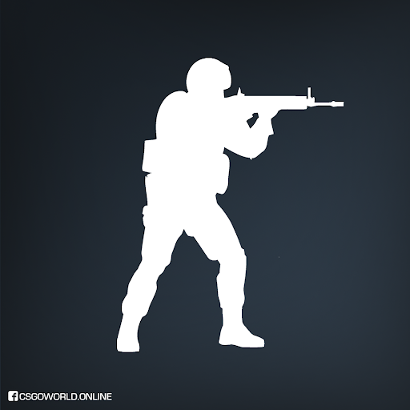
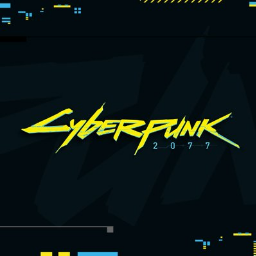

Among Us

Precio: Gratis (Celular) $57.99 MXN (PC)
Descripcion:Among Us es un videojuego de género party y multijugador en línea desarrollado por la compañía estadounidense InnerSloth y distribuido entre junio y noviembre de 2018 para las plataformas Android, iOS y PC.
Counter Strike: Global Offensive
Precio: Gratis
Descripcion: Counter-Strike: Global Offensive es un videojuego de disparos en primera persona desarrollado por Valve Corporation en cooperación con Hidden Path Entertainment, y es el cuarto juego de la saga Counter-Strike
Cyberpunk 2077
Precio:Aproximadamente $749 MXN
Descripción: Cyberpunk 2077 es un videojuego desarrollado y publicado por CD Projekt, que se lanzó para Microsoft Windows, PlayStation 4, y Xbox One el 10 de diciembre de 2020, y posteriormente en PlayStation 5, Xbox Series X|S y Google Stadia.
Destiny 2
Precio: Gratis
Descripción: Destiny 2 es un videojuego de disparos en primera persona, desarrollado y publicado por Bungie. Se lanzó el 6 de septiembre de 2017 para PlayStation 4 y Xbox One, y el 24 de octubre del mismo año para Microsoft Windows. Es la secuela de Destiny y sus posteriores expansiones.